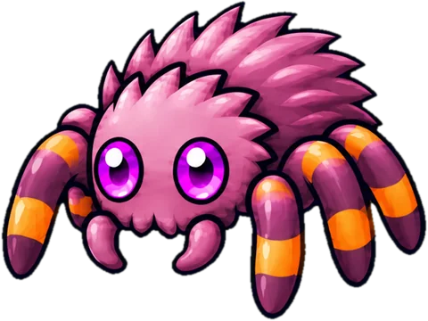

Tap a stage to read its story.
Spinkling is a tiny round purple spider with a plush soft body, eight orange-tipped legs, and wide innocent lavender eyes. Its small abdomen glows faintly in Verdant Valley's dappled shade. It spins webs between Akilla's old root paths - not to trap, but to feel every footstep nearby. Something about its soft purple color and wide eyes puts even nervous insects at ease. Local lore says Spinkling only takes up residence near places where kind words were spoken recently.
Field note: A Spinkling web placed across a path at dusk vibrates at a different frequency for each size of creature that passes - Spinkling learned to read all of them.
Verdant Valley. Spinkling and its family are found in the Verdant Valley. See everyone who lives there.
Share a Bond Food that matches its types to become friends. Spinkling loves:
A Bond Food is not a trick. It joins your spirit with the Kimuro's spirit, and only when it chooses you.
Print the Kimuro adventure packs: mazes, cards, a board game and Bond Mark medals.
See the printable packs